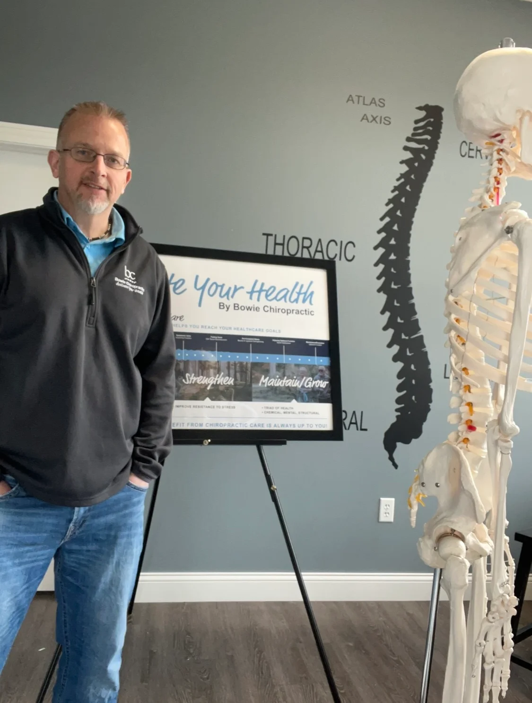

Chiropractic Care
Hands-on adjustments that restore motion to restricted joints and take pressure off the nerves around them.
Learn moreFor Appointments 217-359-7702
Open today: Mon, Wed, Fri 8:30 AM to 6:00 PM
25 Years of Experience
For 25 years, Dr. Kevin Bowie has helped people across Champaign move without fighting their own bodies. His approach is conservative, non-invasive, and built around you, because no two people arrive with the same history, the same goals, or the same reason for being here.

Every plan of care starts with an evaluation, so you know what is going on before you decide anything.

Champaign, Urbana and Savoy
Pain is easy to silence for a little while. Understanding why it showed up in the first place takes more work, and that is the part Dr. Bowie is interested in. Restricted joints and irritated nerves have a way of announcing themselves far from where the trouble actually started, so the first job is always to find the source.
That means your visit begins with a conversation and an evaluation, not a script. You will hear what he found in plain language, along with an honest recommendation about what would help, and how long that is likely to take.
What We Do
Our services are designed to support your body's natural ability to function and heal. We take a personalized approach, combining proven chiropractic techniques with supportive therapies to address the root cause of discomfort. Whether you need relief from current symptoms or want to improve long-term function, each service is tailored to fit your specific needs and goals.
Hands-on adjustments that restore motion to restricted joints and take pressure off the nerves around them.
Learn moreGentle manual muscle testing that shows how your muscles, joints, and nervous system are working together.
Learn moreFocused hands-on work on the muscles and soft tissue that hold tension and pull joints out of position.
Learn moreElectrical stimulation paired with moist heat to relax tight muscles and calm irritated tissue before or after an adjustment.
Learn moreA gentle, rhythmic table technique that gradually opens space in the lower back without any forceful thrust.
Learn moreSimple, targeted movements you can do on your own so the progress you make in the office actually holds.
Learn moreWho We Help & How
You do not need to be an athlete, and you do not need to be in crisis. Most people who walk in are somewhere in between, and simply want to feel like themselves again.
Conditions We Treat
Helping reduce strain and restore proper movement so you can stay active without discomfort.
Addressing stiffness, tension, and misalignment that interfere with daily comfort.
Improving mobility and coordination when your body isn't moving the way it should.
Working to relieve tension and nerve-related triggers that contribute to recurring headaches.
Three Phases of Care
Care tends to move through three phases. Knowing which one you are in makes it much easier to understand what you are feeling and what comes next.
How long you decide to benefit from chiropractic care is always up to you.

The Triad of Health
Structure, chemistry, and mental and emotional state are not separate systems that politely stay in their lanes. Stress tightens muscles. Poor nutrition slows healing. A restricted joint changes how you move, which changes how you sleep, which changes how you handle the next stressful week.
Dr. Bowie looks at all three sides, because addressing only one while ignoring the others is usually why relief does not last.
No Pressure, No Surprises
We believe you should always know what to expect. That's why we begin with a free consultation and evaluation, giving you the opportunity to understand your condition and explore your options without pressure. You'll receive honest recommendations, clear next steps, and a care plan that makes sense for you.
Learn at Your Own Pace
Watch educational videos on pain relief, spinal health, mobility, and chiropractic care to help you live a healthier, more active life.
New videos covering everyday questions about pain, posture, movement, and what chiropractic care can and cannot do.
Questions
If your question is not here, call the office at 217-359-7702. An honest answer costs you nothing.
Chiropractic care is widely recognized as a conservative, non-invasive approach to spine and joint health. Dr. Bowie has practiced for 25 years, and every plan of care starts with an evaluation so that treatment fits your body and your history. If something in your evaluation suggests you would be better served by another provider, he will tell you and help point you in the right direction. If you have concerns or an existing medical condition, bring them up at your consultation so they can be discussed openly before anything begins.
Most people find adjustments quick and easy to tolerate, and many feel relief right away. You may hear a popping sound, which is simply gas releasing from the joint and is not painful. If you are sore, tense, or nervous, say so. Dr. Bowie adjusts his technique and pressure to suit each person, and gentler options such as flexion distraction are available. Some people notice mild soreness afterward, similar to how you might feel after exercise, and it usually settles within a day.
It depends on what is going on, how long it has been going on, and what you want to get back to. There are no cookie-cutter plans here and no long contracts. After your evaluation, Dr. Bowie will explain what he is seeing and give you an honest recommendation with clear next steps. Some people come in for short-term relief and stop there. Others choose to keep going to maintain function. How long you decide to benefit from chiropractic care is always up to you.
Applied kinesiology uses gentle manual muscle testing to see how well your muscles, joints, and nervous system are working together. Dr. Bowie applies light pressure to a muscle and observes how it responds. Those responses help point toward muscle imbalances, joint dysfunction, nerve interference, or stressors that may be affecting how you feel. It is a hands-on assessment tool, not a treatment on its own, and it helps make your care more specific to your body rather than generic.
Your first visit starts with a free consultation and evaluation. You will talk through your history, your symptoms, and what you are hoping to get back to doing. Dr. Bowie will examine how you move and assess what is contributing to the problem. Then he will explain what he found in plain language and lay out your options. You will leave knowing what is going on and what the next step would be, with no pressure to commit to anything. Wear comfortable clothing you can move in.
The most common reasons people come to the office are back pain, neck pain, headaches, and loss of function, meaning your body is not moving the way it should. Care can also support stiffness and tension, limited range of motion, posture concerns, nerve-related irritation, and recovery for active people. If you are not sure whether your situation is a fit, call the office at 217-359-7702 and ask. An honest answer costs you nothing.
Coverage varies quite a bit from plan to plan, so the most reliable way to get a straight answer is to call the office at 217-359-7702 with your insurance information and ask. The team can walk you through what to expect before you commit to anything. Your initial consultation and evaluation are free, so you can find out what is going on and what your options are before there is any cost involved.
Find Us
| Monday | 8:30 AM to 6:00 PM |
|---|---|
| Tuesday | 12:00 PM to 5:00 PM |
| Wednesday | 8:30 AM to 6:00 PM |
| Thursday | 12:00 PM to 5:00 PM |
| Friday | 8:30 AM to 6:00 PM |
| Saturday | 9:00 AM to 11:00 AM |
| Sunday | Closed |